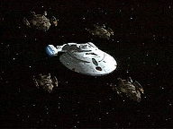
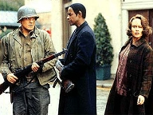
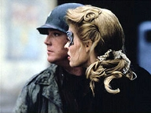
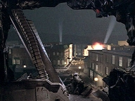
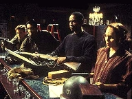
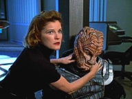
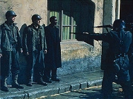

| MANCHETE
DO EPISDIO
Tripulao
lana resistncia aos Hirogen
Episdio
anterior | Prximo episdio Sinopse:
Data Estelar: 51715.2  Mesmo
com a Segunda Guerra Mundial eclodindo pelos corredores da Voyager, o lder dos
Hirogens no est disposto a destruir a tecnologia do holodeck. Insiste a seus
soldados que Janeway seja encontrada e levada a ele com vida. Enquanto isso, a
capit e Seven of Nine, j a par da situao, continuam fingindo em seus
respectivos papis com o intuito de angariar o apoio da resistncia francesa -
especificamente, Tuvok, B'Elanna, Chakotay e Paris. Eles traam um plano que
permitir a Janeway acessar todas as interfaces neurais.
Quando a capit e Chakotay acessam a simulao Klingon, no
outro holodeck, ela convoca o Doutor. As interfaces so controladas da
Enfermaria, portanto o plano explodir o console para desativ-las. Com os
campos de conteno internos da Voyager desativados, os estragos da bomba
hologrfica sero reais. Chakotay monta os explosivos e Janeway consegue
acesso, mas um Hirogen entra na sala e a ataca. Ela consegue escapar a tempo de
a bomba explodir, desativando todos os dispositivos da tripulao.
 A capit levada ao lder dos Hirogen, que lhe explica
por que deseja preservar os holodecks. Ele diz que sua civilizao est
morrendo por causa dos hbitos predatrios em que a raa se baseia h
milnios. Deseja reunir seu povo, abandonar a existncia nmade e restringir
as caadas a presas simuladas. Janeway compreende e oferece a tecnologia, desde
que a Voyager lhe seja devolvida. Os dois chegam a um acordo e o cessar-fogo
parece prximo.
No entanto, no holodeck, um holograma nazista
convence soldados Hirogen a continuar lutando. Enquanto a batalha se
intensifica, Neelix e o Doutor recrutam os Klingons para ajudar. Janeway
trabalha com Harry para sobrecarregar a rede de emissores hologrficos, o que
desativar as simulaes. Mas um oficial Hirogen invade a Engenharia, mata
seu lder e exige que a capit corra para que ele a cace pela nave.
Com as tropas alems se aproximando, Seven tenta
modificar um explosivo para que uma rajada fotnica iniba a atividade
hologrfica na rea. Os nazistas avanam com fora e, quando esto prestes
a vencer, os Klingons atacam. Correndo pelos corredores e arrastando-se por
tubos Jefferies, Janeway luta pela sua vida. Ela ilude o soldado Hirogen para um
ponto em que a arma hologrfica dele desaparece. Em seguida, pega um
rifle e o mata. Os emissores hologrficos finalmente sobrecarregam e a
simulao termina. Embora a Voyager saia severamente danificada do conflito,
os dois lados negociam uma trgua e Janeway entrega aos Hirogen a tecnologia
dos holodecks.
Comentrios:
 Se
na primeira parte de "The Killing Game" o foco era o tormento
filosfico do lder dos caadores, aqui passa a ser a resistncia da
tripulao da Voyager. E a concluso da histria consegue atingir seu
objetivo, no sofrendo da "maldio da segunda parte". O segmento
comea com a guerra correndo solta pelos corredores da nave. Os hologramas se
espalham pelos decks porque h emissores hologrficos instalados em toda
parte. Janeway e Seven armam-se com rifles dos anos 1940 e saem para organizar o
movimento com os aliados norte-americanos e os Klingons. Nesse meio-tempo, os
Hirogens ficam impacientes. No se trata mais de um jogo. A caada real. Em
pouco tempo, o Alfa v seu poder sobre os caadores diminuir. Palavras e
inspiraes sobre um futuro improvvel no mais os detm.
Os roteiristas conseguem desenvolver muito bem os
personagens aqui. Chakotay, Paris, B'Elanna, Tuvok. Todos brilham a seu modo. A
grande ironia que se desenvolvem os personagens dos personagens.
V-se muito mais do capito Hiller (ou Miller - sim, porque ele se refere a si
mesmo pelos dois nomes!) do que de Chakotay em anos de srie! O namorico do
soldado americano (Paris) com a mocinha francesa (B'Elanna) s parece meio
cafona porque na vida real do seriado os dois so mesmo namorados. Mas seu
histrico foi muito bem costurado trama da simulao. E a cena em que
conversam sobre a gravidez de Brigitte bastante convincente. Dawson faz aqui
um papel bem diferente da Klingon. Enquanto a engenheira agressiva,
temperamental e impaciente, Brigitte a tolerncia em pessoa. Vive de cabea
baixa e leva desaforos para casa, apenas para no expor o movimento de
resistncia.
 Kate
Mulgrew tambm d um show na atuao. Janeway assume aquele bom e velho
instinto materno de proteo. A cena do dilogo com o Hirogen Alfa no deck 1
sensacional, a chave para se entender o episdio. H uma compreenso
mtua. Respeito, apesar de serem adversrios. Os dois saem de l com um
acordo de cessar-fogo. Acontece que tudo vai por gua abaixo quando o
lder dos caadores acaba morrendo. E ele morto pelo seu prprio
Beta, assim como
Ghandi foi assassinado por um hindu e Itzhak Rabin por um judeu. H uma grande
mensagem escondida aqui. Alis, essa mensagem vem sendo repetidamente
transmitida na srie (em destaque, nos episdios "Distant
Origin" e "Living Witness"): a ignorncia, o medo e o fanatismo so os maiores
entraves ao esclarecimento e transformao.
Chama ateno tambm a forma como o Kapitan
(J. Paul Boehmer) convence o Beta a armar o
motim. A direo foi excelente aqui. O brilho no olhar do soldado
frustrado.Veja que mesmo um holograma aparentemente insignificante consegue
envenenar a situao. O oficial nazista nada mais faz do que reforar as
crenas fortemente enraizadas do jovem Hirogen. E se antes ele se mostrava
descontente com as imposturas do superior, a declarao de cessar-fogo com a
presa foi a gota d'gua. Ao mat-lo sem sequer ouvir o que o Alfa tinha a
dizer, parte para caar da capit.
 A
seqncia a seguir sensacional. No h quem no tenha ficado tenso
nessa hora. Janeway, a corajosa oficial superior da Voyager, vista aqui se
arrastando pelos corredores e tubos Jefferies com a perna ensangentada. A
forma como consegue revirar a situao brilhante! Outro ponto forte no
roteiro foi a carga de humor. E ningum melhor para balancear a ao com
comdia do que o Doutor incitando os Klingons a lutar, assessorado por um
"guerreiro" Neelix bbado.
Mas vamos aos questionamentos menos generosos.
Leiam-se "inconsistncias". Quando o aparente fim das hostilidades
declarado, Paris se diverte na simulao da Segunda Guerra, entre mortos,
feridos e uma Voyager semi-destruda. Foi despropositado e completamente
dispensvel; a seqncia no serviu a propsito algum. Depois, quando
Seven modifica (sabe-se l como) uma granada com tecnologia Borg e est
prestes a lan-la, leva um tiro e cai no cho. Ao final da histria,
quando toda a atividade hologrfica cessa e Chakotay diz "acabou",
ela sai caminhando normalmente.
 Porm,
deixando os detalhes parte, nada explica a surpreendente deciso de
Janeway de dar aos Hirogens tecnologia da Federao ao final do episdio. A
capit, que nas primeiras temporadas deflagrou uma longa guerra com os Kazons
por um simples componente de teletransporte, aqui presenteia (porque no
houve reciprocidade) o inimigo com os holodecks! E o pior: ela no esclarece
por que o fez. Incoerente! Se o lder dos Hirogens morreu, no teria nem por
que encerrar o conflito formal e pacificamente. O que, ento, aconteceu?
Simples: a capit deu tecnologia a uma raa que no detinha
tal conhecimento. Bem diferente do que aconteceu, por exemplo, em "Concerning
Flight", no qual equipamentos e armas da Voyager foram roubados e
ficaram para trs. J se foi o tempo em que se dizia "vou destruir essa
nave antes de entregar qualquer parte dela".
Agora, Janeway oferece e insiste
(lembrando que o Hirogen declina a princpio, alegando que no compartilha
dos princpios de seu ex-Alfa). A censura aqui no ao roteiro, mas
capit. Pode ser que quiseram lhe imprimir um toque humano e distanci-la do
conceito de que "o capito no erra". E
l se vai a Primeira Diretriz, porque as repercusses podem se manifestar
sobre outras raas no quadrante.Vendo a deciso
pelo lado bom, parece que os caadores no ficam com dio da Voyager, como
ficaram (e devem estar at hoje) os Kazons, Vidiians e tantos outros. Pela
primeira vez, a tripulao chega a um (pseudo) entendimento com seus
inimigos.  No
fim das contas, ficam diversas questes em aberto. Qual foi o dano nave?
Quantos tripulantes morreram? Isso quer dizer que os Hirogen deixaro a
Voyager em paz? Pode haver uma futura cooperao? Haver novos ataques?
Tendo em conta o segmento seguinte, seguro dizer que os roteiristas
recorrero ao velho amigo "reset". Pode esquecer quaisquer
implicaes de "The Killing Game" no futuro prximo. Seus
efeitos s se faro sentir no tambm duplo
"Flesh and Blood", da stima temporada (isso mesmo),
sobre o qual nada se dir neste momento.
Citaes:
Janeway - "I see you've done some
redecorating."
("Vejo que andou redecorando.")
Hirogen Alpha - "Your attempt to retake this vessel was inventive. From
the day I seized Voyager you put up a dauntless fight, but your fight is over
now. You're going to help me shut down these simulations and repair the
holodecks."
("Sua tentativa de retomar esta nave foi criativa. Desde o dia em que tomei
a Voyager voc iniciou uma luta incansvel, mas sua luta terminou agora. Vai
me ajudar a desligar essas simulaes e reparar os holodecks.")
Janeway - "No. We'll destroy this ship before we surrender it."
("No. Vamos destruir esta nave antes de rend-la.")
Hirogen Alpha - "Don't threaten me, Captain. I've faced far more
intimidating prey than you. If this fight continues, I promise you I will hunt
down and kill every member of your crew."
("No me ameace, capit. Enfrentei presas muito mais intimidadoras que
voc. Se a batalha continuar, prometo que vou caar e matar cada membro da
sua tripulao.")
Janeway - "Well, by then this ship will be damaged beyond repair and
there won't be much of a trophy left, will there?"
("Bom, at l a nave estar danificada alm dos reparos e no restar
trofu algum, no ?")
Hirogen Alpha - "Perhaps I should kill you and find someone who will
co-operate."
("Talvez eu devesse mat-la e encontrar algum que coopere.")
Janeway - "Good luck. You'll get the same response from all of them."
("Boa sorte. Receber a mesma resposta de todos eles.")
Hirogen Alpha - "You are a resilient
species. I admire your cunning"
("Vocs so uma espcie resistente. Admiro sua esperteza.")
Janeway - "Let's end this. I'll call a cease-fire and we can try to
contain the damage. I want my ship back, but in return I will give you what
you need to create the holodeck technology. It would be cunning for you to
agree."
("Vamos terminar isso. Vou declarar o cessar-fogo e podemos tentar
conter os danos. Quero minha nave de volta, mas em troca lhe darei o que
precisa para criar a tecnologia dos holodecks. Seria esperto de sua parte
aceitar.")
Seven
- "One day the Borg will assimilate your species despite your arrogance.
When that moment arrives, remember me."
("Um dia os Borgs assimilaro a sua espcie, apesar da sua arrogncia.
Quando esse momento chegar, lembre-se de mim.")
Janeway - "What are you waiting for?"
("O que est esperando?")
Oficial Hirogen - "I am a hunter. You are my prey. Run."
("Sou um caador. Voc minha caa. Corra.")
Trivia:
 O personagem de Chakotay no holodeck chamava "capito Hiller" na
primeira parte de "The Killing Game". Aqui, chama-se "capito
Miller".
O personagem de Chakotay no holodeck chamava "capito Hiller" na
primeira parte de "The Killing Game". Aqui, chama-se "capito
Miller".
Ficha
tcnica:
Direo de
Victor Lobl
Escrito por Brannon Braga e Joe Menosky
Exibido em
04/03/1998
Produo: 087 Elenco: Kate
Mulgrew como Kathryn Janeway
Robert Beltran como
Chakotay
Roxann Biggs-Dawson como B'Elanna Torres
Robert
Duncan McNeill como Tom Paris
Ethan Phillips como
Neelix
Robert Picardo como Doutor
Tim Russ
como Tuvok
Jeri Ryan como Seven of Nine
Garrett Wang como Harry Kim Elenco
convidado:
Danny Goldring como Hirogen Alpha
Mark Metcalf como Mdico Hirogen
Mark Deakins como Oficial da SS
Hirogen
J. Paul Boehmer como Kapitan
Paul Eckstein como Hirogen jovem
Peter Hendrixson como Klingon
Episdio
anterior | Prximo episdio
|